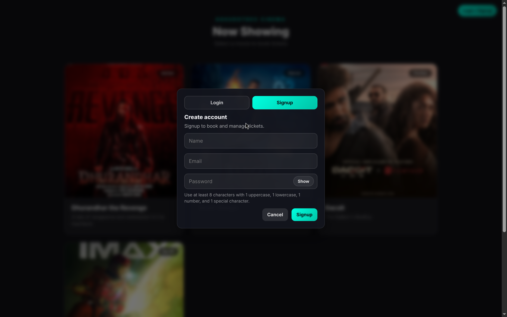
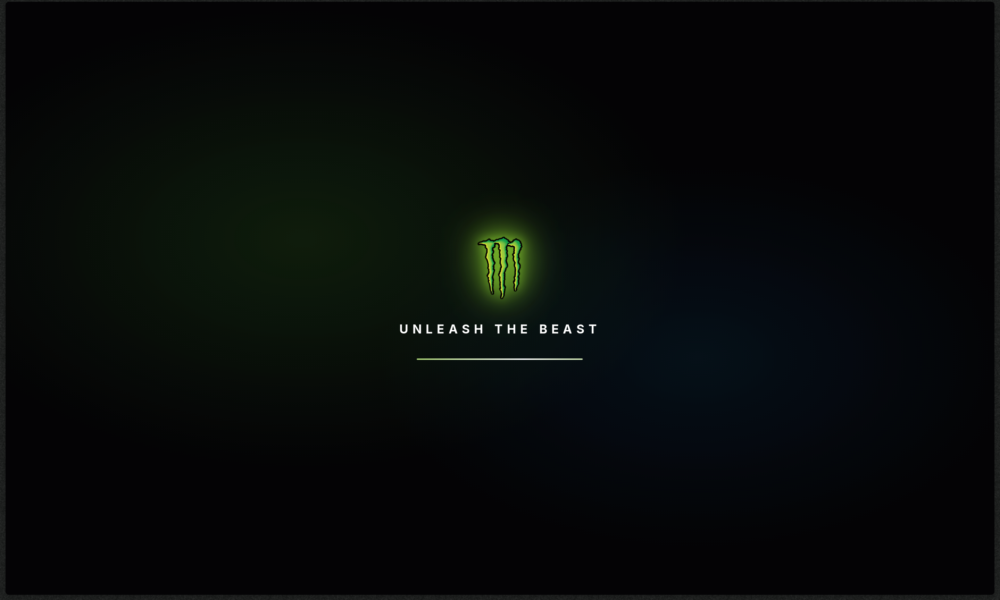
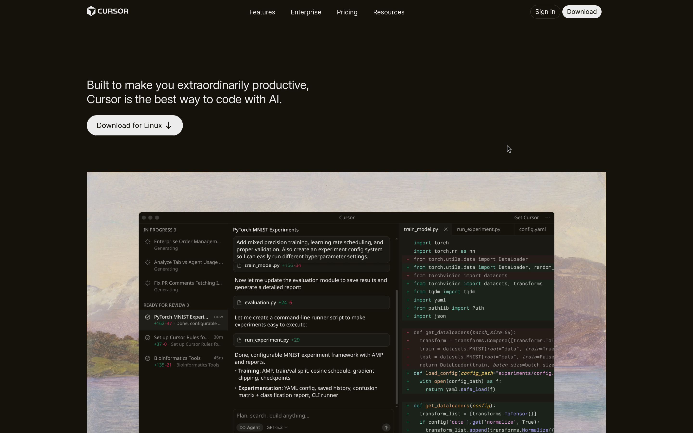
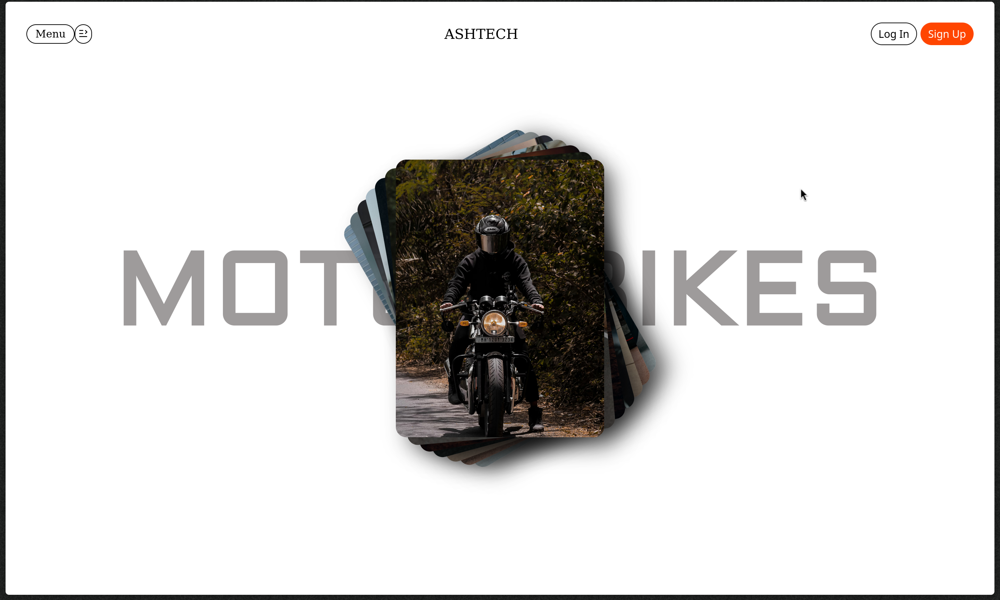

My Projects

Ticket Booking System-BMS
11 april 2026 - 15 april 2026A full-stack movie ticket booking platform built for a hackathon using modern web technologies. This project focuses on solving real-world seat booking challenges with secure JWT authentication, live seat availability updates, hold-and-confirm booking flow, booking history management, and cancellation support. Designed with a smooth user interface and scalable backend architecture to simulate a production-ready cinema booking experience.
Technologies
View Live Source Code

Monster Website
4 march 2026 - 16 march 2026An immersive, high-energy single-page web experience inspired by Monster Energy, built using HTML, CSS, and Vanilla JavaScript. This project focuses on dynamic animations, interactive elements, and a visually intense design system, featuring GSAP-powered scroll effects, real-time theme switching, and a custom mini-game to create an engaging, “alive” user experience.
Technologies
View Live Source Code

Cursor Clone
2 feb 2026 - 7 feb 2026A high-fidelity, desktop-first clone of the Cursor landing page built using pure HTML and CSS. This project focuses on accurately replicating layout, typography, spacing, and visual hierarchy while maintaining clean, semantic code without using any frameworks or JavaScript.
Technologies
View Live Source Code

Ashtech
12 feb 2026 - 19 feb 2026A visually engaging bike showcase project built using HTML and CSS, primarily focused on practicing GSAP animations. The project emphasizes smooth transitions, scroll-based effects, and immersive motion design to create a dynamic and modern presentation of high-performance bikes.
Technologies
View Live Source Code